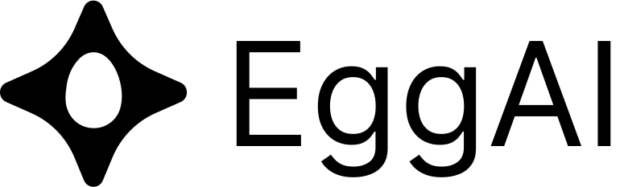

Multi-Agent Meta Framework


EggAI Multi-Agent Meta Framework makes it easy to build enterprise-grade multi-agent systems with quality-controlled output, using an async-first, distributed and composable architecture. It provides:
- Examples: Practical implementation scenarios using popular AI frameworks.
- eggai SDK: Slim SDK for asynchronous, distributed multi-agent communication.
Meta Framework
The EggAI Multi-Agent Meta Framework is a framework-agnostic AI orchestration layer designed for flexibility and scalability. It enables seamless integration with popular AI frameworks.
AI Framework Integrations
DSPy Agent
# Install `eggai` and `dspy` and set OPENAI_API_KEY in the environment
import asyncio
import dspy
from eggai import Agent, Channel, eggai_main
dspy.configure(lm=dspy.LM("openai/gpt-4o-mini"))
qa_model = dspy.Predict("question -> answer")
agent, channel = Agent("QAAgent"), Channel()
@agent.subscribe(filter_func=lambda event: event.get("event_name") == "question_created")
async def handle_question(event):
question = event["payload"]["question"]
answer = qa_model(question=question).answer
print(f"[QAAgent] Question: {question} | Answer: {answer}")
await channel.publish({
"event_name": "answer_generated",
"payload": {"question": question, "answer": answer}
})
@eggai_main
async def main():
await agent.start()
await channel.publish({
"event_name": "question_created",
"payload": {"question": "When was the Eiffel Tower built?"}
})
await asyncio.Future()
if __name__ == "__main__":
asyncio.run(main())
LangChain Agent
# Install `eggai` and `langchain` and set OPENAI_API_KEY in the environment
import asyncio
from langchain.chat_models import ChatOpenAI
from langchain.schema import HumanMessage
from eggai import Agent, Channel, eggai_main
llm = ChatOpenAI(model_name="gpt-4o", temperature=0)
agent, channel = Agent("QAAgent"), Channel()
@agent.subscribe(filter_func=lambda event: event.get("event_name") == "question_created")
async def handle_question(event):
question = event["payload"]["question"]
answer = llm([HumanMessage(content=question)]).content
print(f"[QAAgent] Question: {question} | Answer: {answer}")
await channel.publish({
"event_name": "answer_generated",
"payload": {"question": question, "answer": answer}
})
@eggai_main
async def main():
await agent.start()
await channel.publish({
"event_name": "question_created",
"payload": {"question": "When was the Eiffel Tower built?"}
})
await asyncio.Future()
if __name__ == "__main__":
asyncio.run(main())
LiteLLM Agent
# Install `eggai` and `litellm` and set OPENAI_API_KEY in the environment
import asyncio
import litellm
from eggai import Agent, Channel, eggai_main
litellm.model = "gpt-4o"
agent, channel = Agent("QAAgent"), Channel()
@agent.subscribe(filter_func=lambda event: event.get("event_name") == "question_created")
async def handle_question(event):
question = event["payload"]["question"]
answer = litellm.completion(model=litellm.model, messages=[{"role": "user", "content": question}])["choices"][0]["message"]["content"]
print(f"[QAAgent] Question: {question} | Answer: {answer}")
await channel.publish({
"event_name": "answer_generated",
"payload": {"question": question, "answer": answer}
})
@eggai_main
async def main():
await agent.start()
await channel.publish({
"event_name": "question_created",
"payload": {"question": "When was the Eiffel Tower built?"}
})
await asyncio.Future()
if __name__ == "__main__":
asyncio.run(main())
LlamaIndex Agent
# Install `eggai` and `llama_index` and set OPENAI_API_KEY in the environment
import asyncio
from llama_index.llms.openai import OpenAI
from eggai import Agent, Channel, eggai_main
llm = OpenAI(model="gpt-4o")
agent, channel = Agent("QAAgent"), Channel()
@agent.subscribe(filter_func=lambda event: event.get("event_name") == "question_created")
async def handle_question(event):
question = event["payload"]["question"]
answer = llm.complete(question).text
print(f"[QAAgent] Question: {question} | Answer: {answer}")
await channel.publish({
"event_name": "answer_generated",
"payload": {"question": question, "answer": answer}
})
@eggai_main
async def main():
await agent.start()
await channel.publish({
"event_name": "question_created",
"payload": {"question": "When was the Eiffel Tower built?"}
})
await asyncio.Future()
if __name__ == "__main__":
asyncio.run(main())
AI Agent Evaluations
Agent Evaluation using LLM as a Judge metrics
# Install `eggai` and `dspy` and set OPENAI_API_KEY in the environment
# Make sure to have the agent implementation in the `agent.py` file defined
import asyncio
import pytest
import dspy
from agent import agent
from eggai import Agent, Channel
dspy.configure(lm=dspy.LM("openai/gpt-4o-mini"))
ground_truth = [
{"question": "When was the Eiffel Tower built?", "answer": "The Eiffel Tower was built between 1887 and 1889."},
{"question": "Who wrote Hamlet?", "answer": "Hamlet was written by William Shakespeare."},
{"question": "What is the capital of France?", "answer": "The capital of France is Paris."},
]
class EvaluationSignature(dspy.Signature):
question: str = dspy.InputField(desc="Ground truth question.")
agent_answer: str = dspy.InputField(desc="Agent-generated answer.")
ground_truth_answer: str = dspy.InputField(desc="Expected correct answer.")
judgment: bool = dspy.OutputField(desc="Pass (True) or Fail (False).")
reasoning: str = dspy.OutputField(desc="Detailed justification in Markdown.")
precision_score: float = dspy.OutputField(desc="Precision score (0.0 to 1.0).")
test_agent = Agent("TestAgent")
test_channel = Channel()
event_received = asyncio.Event()
received_event = None
@test_agent.subscribe(filter_func=lambda event: event.get("event_name") == "answer_generated")
async def handle_answer(event):
global received_event
received_event = event
event_received.set()
@pytest.mark.asyncio
async def test_qa_agent():
await agent.start()
await test_agent.start()
for item in ground_truth:
event_received.clear()
await test_channel.publish({"event_name": "question_created", "payload": {"question": item["question"]}})
try:
await asyncio.wait_for(event_received.wait(), timeout=5.0)
except asyncio.TimeoutError:
pytest.fail(f"Timeout: No 'answer_generated' event was published for question: {item['question']}")
assert received_event is not None, "No 'answer_generated' event was received."
assert received_event["event_name"] == "answer_generated", "Unexpected event type received."
assert "answer" in received_event["payload"], "The 'answer' key is missing in the payload."
agent_answer = received_event["payload"]["answer"]
question = received_event["payload"]["question"]
ground_truth_answer = item["answer"]
assert question == item["question"], f"Incorrect question in the answer payload: {question}"
eval_model = dspy.asyncify(dspy.Predict(EvaluationSignature))
evaluation_result = await eval_model(
question=question,
agent_answer=agent_answer,
ground_truth_answer=ground_truth_answer
)
assert isinstance(evaluation_result.judgment, bool), "Judgment must be a boolean."
assert isinstance(evaluation_result.reasoning, str), "Reasoning must be a string."
assert isinstance(evaluation_result.precision_score, float), "Precision score must be a float."
assert 0.8 <= evaluation_result.precision_score <= 1.0, "Precision score must be between 0.8 and 1.0."
Examples
Practical implementation scenarios and integration guides with popular AI frameworks. We encourage you to explore and copy/paste from our examples for your projects.
If you're new to EggAI, we recommend starting with the Getting Started example to learn the basics. If you want to see a more extensive multi-agent system in action, check out the Multi-Agent Insurance Support System example.

|
Getting Started Orchestrate two agents asynchronously. Tags: Communication |

|
Coordinator Bridge multiple communication channels. Tags: Communication, Pattern |

|
Websocket Gateway Real-time interaction via WebSockets. Tags: Communication, Realtime |

|
DSPy ReAct Agent Advanced Agents with DSPy ReAct. Tags: DSPy, Tool Calling, React |

|
LangChain Agent Integrate tool calling with LangChain. Tags: Tool Calling, LangChain |

|
LiteLLM Agent Power agents with LiteLLM. Tags: LiteLLM |

|
Agent Evaluation & Optimization with DSPy Data-driven development with DSPy. Tags: DSPy, Evaluation, Optimization |

|
Safe Agents with Guardrails AI Guarding LLM agents against toxicity and PII leakage. Tags: DSPy, Guardrails |

|
Triage Agent Triage Agent with classification and routing. Tags: Classification, Routing |

|
Shared Context Maintain shared context across agents. Tags: Communication, Memory |

|
Multi-Agent Conversation Context-aware multi-agent conversations. Tags: Communication, Classification, Routing, Chat |

|
Multi-Agent Insurance Support System Insurance support system with a support chat UI. Tags: Communication, Realtime, Classification, Routing, Chat |
EggAI SDK
EggAI SDK includes components like Agent and Channel for decoupled communication in multi-agent systems. Its slim design offers flexibility for enterprise-grade applications and seamless integration with popular AI frameworks such as DSPy, LangChain, and LlamaIndex.
Installation
Install eggai via pip:
pip install eggai
Getting Started
Here's how you can quickly set up an agent to handle events in an event-driven system:
import asyncio
from eggai import Agent, Channel, eggai_main
agent = Agent("OrderAgent")
channel = Channel()
@agent.subscribe(filter_func=lambda e: e.get("event_name") == "order_requested")
async def handle_order_requested(event):
print(f"[ORDER AGENT]: Received order request. Event: {event}")
await channel.publish({"event_name": "order_created", "payload": event})
@agent.subscribe(filter_func=lambda e: e.get("event_name") == "order_created")
async def handle_order_created(event):
print(f"[ORDER AGENT]: Order created. Event: {event}")
@eggai_main
async def main():
await agent.start()
await channel.publish({
"event_name": "order_requested",
"payload": {
"product": "Laptop",
"quantity": 1
}
})
await asyncio.Future() # Keep the event loop running
if __name__ == "__main__":
asyncio.run(main())
Copy this snippet into your project, customize it, and you’re good to go!
Core Concepts
An Agent is an autonomous unit of business logic designed to orchestrate workflows, process events, and communicate with external systems such as Large Language Models (LLMs) and APIs. It reduces boilerplate code while supporting complex and long-running workflows. Key features include:
- Event Handling: Use the
subscribedecorator to bind user-defined handlers to specific events. - Workflow Orchestration: Manage long-running workflows and tasks efficiently.
- External System Communication: Seamlessly interact with Large Language Models (LLMs), external APIs, and other systems.
- Lifecycle Management: Automatically handle the lifecycle of Kafka consumers, producers, and other connected components.
- Boilerplate Reduction: Focus on core business logic while leveraging built-in integrations for messaging and workflows.
A Channel is the foundational communication layer that facilitates both event publishing and subscription.
It abstracts Kafka producers and consumers, enabling efficient and flexible event-driven operations. Key features include:
- Event Communication: Publish events to Kafka topics with ease.
- Event Subscription: Subscribe to Kafka topics and process events directly through the
Channel. - Shared Resources: Optimize resource usage by managing singleton Kafka producers and consumers across multiple agents or channels.
- Seamless Integration: Act as a communication hub, supporting both Agents and other system components.
- Flexibility: Allow Agents to leverage Channels for both publishing and subscribing, reducing complexity and duplication.
Why Copy/Paste?
1. Full Ownership and Control
By copying and pasting, you have direct access to the underlying implementation. Tweak or rewrite as you see fit, the code is truly yours.
2. Separation of Concerns
Just like decoupling design from implementation, copying code (rather than installing a monolithic dependency) reduces friction if you want to restyle or refactor how agents are structured.
3. Flexibility
Not everyone wants a one-size-fits-all library. With copy/paste “recipes,” you can integrate only the parts you need.
4. No Hidden Coupling
Sometimes, prepackaged frameworks lock in design decisions. By copying from examples, you choose exactly what gets included and how it’s used.